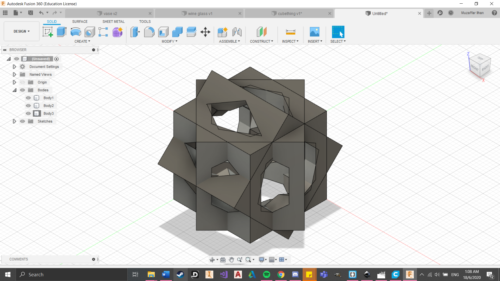

3D Printing:
3d printing is a technology that allows you to print physical models from digitally made models. All you need to do is to create a deisgn in a software like Fusion360, then slice the model before transfering it to the printer. Here in SP, we mostly use the Cura Ultimaker 2+ which thankfully is easy to use. Below, you can see an image of the printer taken from the Dfab github which shows you all the parts that are found on it.

Bridging
Bridging is used to test the 3d printer's ability to print layers between a gap without any support. In this case, I set the gap size from 10 to 25mm. From my previous experience using 3d printers, the printer already starts to struggle at the 10mm mark, with failure at the 25mm mark.


 (Click to download file)
(Click to download file)
Overhang
Overhang is to test the 3d printer's ability to print at extreme angles. This will enable you to find its angle limit. Usually, as long as the overhang does not exceed 45 degrees, the model should be able to be printed without the use of support structures. Here I created a simple overhang test from watching a tutorial on Youtube. It goes from 30 to 70 degrees.
(Click to download file)
Infill Density
Infill density is the material that fills the inside walls of your structure. A higher infill creates a stronger but heavier print. We usually use 20% - 25% infill densities because they have a nice strength to weight ratio. Some printers can even create intricate patterns from honey combs to even spirals.
(Taken from my3dmatter.com)
Clearance
Clearance is crucial especially when creating movable joints such as hinges. Making the clearance too small will fuse the parts together. So it is common to put a clearance of at least 0.5mm. As an example, below is a hinge that I had designed for my final project. I gave it a tolerance of 0.6mm and it works amazingly. However, too much clearance will cause a lot of play which will damage your workpiece.

Assignment 1
Firstly, I started with sketching a box, 23mm in width and length before extruding upwards by 23mm.

Then I played around with a couple shapes and ended up choosing a hexagon for the six sides. So I sketched out the hexagons using the inscribed polygon function at 9.5mm. I did so to allow enough space from the edge to give it structural stiffness. Then I extruded inwards for all the hexagons.


For this step I copied the cube and rotated it. I did this step one more time. However I found out that when I rotated the cubes, it would move away from the original cube due to its rotational axis. So I had to manually move the 2 copied cubes to align them up as centred as possible.


At this point I felt as if the cube was just too pointy. So I used the chamfer and extrude function all over the cube. I do admit that I also did this to lower the printing time but it made almost no difference.
The end product does look really messy but I ensure you that once it is printed, it would look much better. Below are some of the side profiles of the cube. I must say that they look pretty good to me. Also, this cube of mine is coincidently similar to one of my classmates. We must have watched similar videos or something haha.
(Click to download file)
So here is the finish product. Took me awhile to clear the support from the inside. I could barely fit a needle nose plier inside it. But overall, I felt that it turned out great. Looks alot like a durian which was indeed my inspiration for this assignment.
Assignment 2
For this assignment, we had to slice our chess knight model in cura and see how long it takes to print. For the printer settings, I used 20% infill, 60m/s print speed, support everywhere and skirt build plate adhesion. All these takes the printer 44 minutes to print, using 0.61m of material at 5 grams.